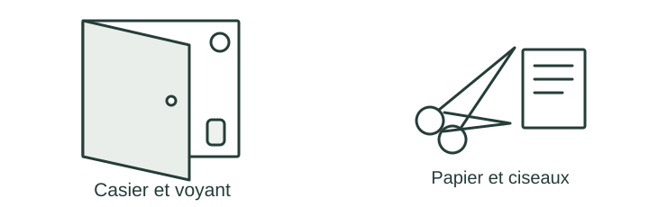

OBSERVER · EXPÉRIMENTER · EXPLIQUER
Un casier signale un oubli
Observe une mesure à la fois. Prépare les situations que ton futur programme devra traiter.

✎ Garde ta feuille à côté de toi.Prévois sur papier → manipule → observe → rédige sur papier.
Des observations pour expliquer
- Q5 : écris l’algorithme sur papier.
- Q6 : prépare cinq tests, en précisant les entrées et les observations à relever.
Appuie ton explication sur une valeur, un changement observé ou une comparaison. Distingue ce que montre le modèle et ce qui reste à vérifier.